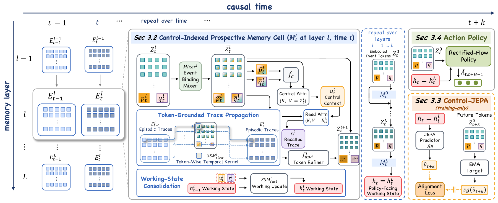
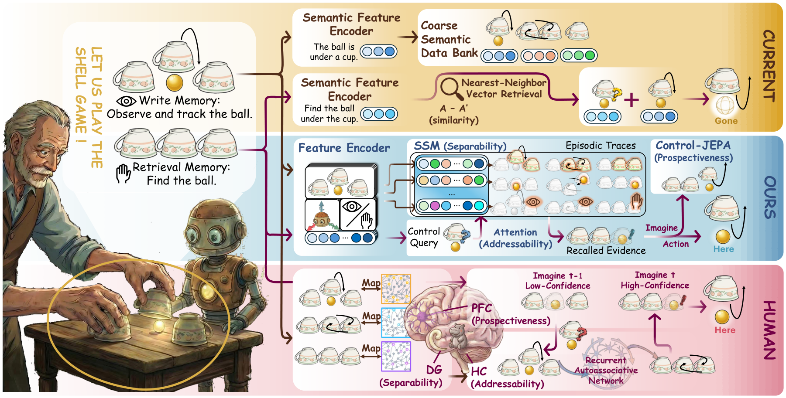
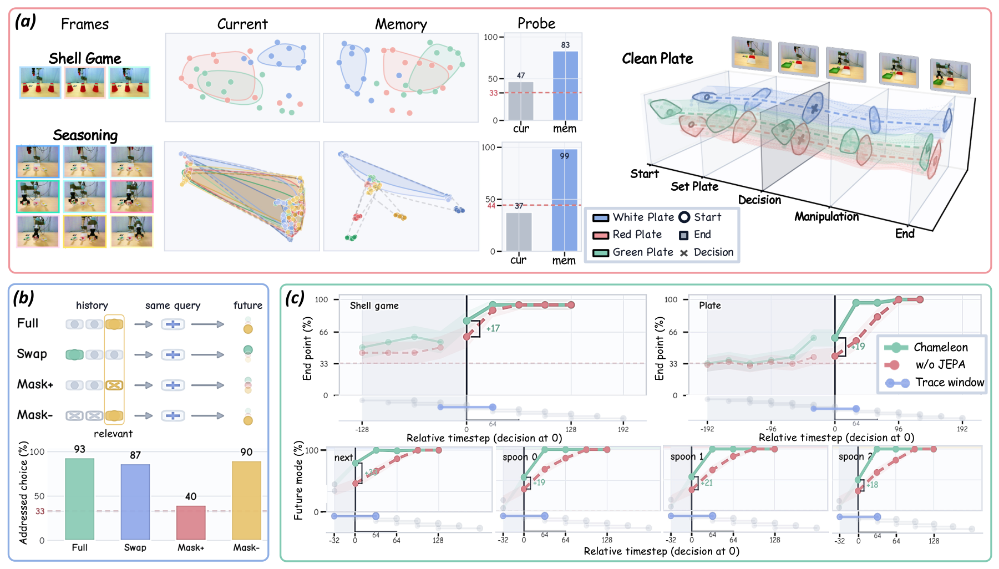
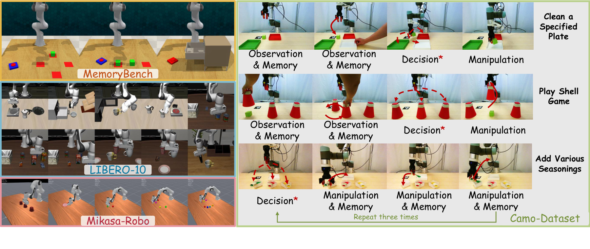

能拿到的是本专题里唯一一个把检索条件从视觉相似度改写成控制状态的工作：20.3M 参数的记忆层 + 一条 0.05 权重的 JEPA 辅助损失，就把它自己搭的真机别名基准从 22.5% 的 DSR 拉到 80.8%。代价是记忆没有显式容量、没有写入门控，所谓「几何落地」实际只是 token 索引对齐，相机或物体一动就失效。
- 最小可复用件
- 控制索引 + token 对齐轨迹库 + 一次 cross-attention 召回：\(c=f([\bar{p},\bar{q}])\) → \(u=LN(c+\operatorname{Attn}(c,Z,Z))\) → \(r=LN(\operatorname{Attn}(u,E,E))\)。三个算子加起来不到 10M 参数，可插进任何有本体感觉输入的策略。
- 主要风险
- query 只由本体感觉和语言构成。指令在全任务内恒定时，索引退化成「体感进度估计器」；本体感觉噪声或位姿漂移会直接污染检索键，而检索键一旦错，召回的证据越"完整"越有害。
- 复现门槛
- 单张 RTX 5090 可训（100k 步、batch 64、bf16）；需要 30Hz 以上的真机轨迹、双视角（腕部 + 第三人称）与逐 episode 的隐变量标注；Camo-Dataset 未开源，别名基准要自己搭。
1. 核心摘要
论文要解决的问题被命名为 observation–action delay（观测—动作延迟）：机器人在某一刻看到的信息，要到很久之后才被用于决策，而到那一刻时该信息已经不可观测。典型场景是藏球游戏——先看见球在哪个杯下，再看杯子被反复交换，最后要选杯时所有杯子长得一模一样。作者把这种情形写成一条硬约束：在标注的别名决策时刻 \(t_{d}\)，两个不同历史 \(z_{i}\)、\(z_{j}\) 给出几乎相同的观测 \(O_{td}(z_{i})\approx O_{td}(z_{j})\)，但历史正确的动作不同 \(a*(z_{i})\ne a*(z_{j})\)。此时策略在观测空间里是非马尔可夫的，多给几帧也没用——因为需要的那几帧已经过去了。
论文由此提出三条对记忆的功能要求，并用神经科学做类比（明确声明只是功能启发，不是生物蓝图）：可分离性（separability，DG 的模式分离：相似历史不能塌成同一个记忆状态）、可寻址性（addressability，PFC–HC 的线索依赖提取：要按当前决策去取，而不是按最近或最像）、前瞻性（prospectiveness，PFC 的目标导向预测：取回的证据要能变成一个支撑未来动作的工作状态）。
Chameleon 是一套约 60M 可训练参数的视觉运动策略，把这三点落成一条 write–propagate–address–consolidate 回路。每步把 RGB、本体感觉、可选语言编码成 \(N\) 个「具身事件 token」（每视角 36 个 patch token，加 1 个本体 token 与 1 个语言 token，双视角共 74 个）；两层记忆单元中，每层先做帧内自注意力绑定，再用一个逐 token 共享的因果 SSM 把每个 token 流各自沿时间传播成一条轨迹 \(E^\ell_{t}\)（这就是"可分离"：N 条历史并行，不压成一个 recurrent 向量）；接着由本体 token 与语言 token 生成控制索引 \(c^\ell_{t}\)，再用当前帧 token 把它细化成控制上下文 \(u^\ell_{t}\)，以 \(u\) 为 query 对轨迹库做 cross-attention 得到召回 \(r^\ell_{t}\)（这就是"可寻址"）；召回与上下文融合后进入一条更快的 SSM 维护工作状态 \(h^\ell_{t}\)，并广播回写进 token。训练时额外的 Control-JEPA 让 \(h_{t}\) 去预测未来 \(k\in\{1,2,4,8,16,32\}\) 步的控制上下文（不是图像、不是世界状态），把"记住"拧成"为下一步做准备"；推理时该分支整个丢弃，因果性不受影响。动作由以 \(C_{t}=W_{h}\cdot h_{t}\) 为条件的 transformer rectified-flow 头生成。
数字上：自建真机基准 Camo-Dataset 上，决策成功率 / 端到端成功率从最强同协议基线 Diffusion Policy 的 22.5% / 21.3% 提升到 80.8% / 71.3%；LIBERO-10 十任务混训 \(87.1\%\pm 0.8\%\)（3 seeds）；MIKASA-Robo 五任务混训 \(75.1\%\pm 1.4\%\)、两任务专家设定 \(95.6\%\pm 1.0\%\)。消融把三条设计原则逐一对上：去掉记忆降到 17.6%，换成相似度检索降到 18.5%，换成单状态 Mamba 降到 22.2%，去掉控制索引降到 26.0%，去掉 Control-JEPA 降到 52.8%（均为 SR）。判定：这是本专题里唯一把"检索键 = 控制状态"做成端到端可训练模块的工作，值得抄的是 query 构造与逐 token 轨迹传播这两件事；但它的"几何"是伪几何，"记忆库"也不是槽位栈，别按字面去实现。
2. 记忆环节定位
两个主命中格很清楚：记忆表征方面，它用「每步 N 个 token、每个 token 流各自一条轨迹」替代了单向量递归压缩，是本专题里唯一显式以「保持 N 条可区分历史」为设计目标的做法；索引与检索方面，检索条件不是语言目标、不是视觉相似度、也不是"全部历史"，而是一个由本体感觉与语言生成、再用当前帧细化的连续向量——这是全文最有迁移价值的一点。
另外三格是部分命中。写入触发只是部分：它不做事件检测，每个控制步都无条件写一次，没有 keyframe 选择、没有写入门控、没有"这次观测值不值得记"的判断，这也是它无法处理超长序列的结构性原因。动作接口是部分：工作状态确实条件化了 rectified-flow 头，但接口是"一个 512 维向量拍给动作头"，而不是逐步的 memory read。评测是部分：Camo-Dataset 是本文自己造的真机诊断基准，把"记忆错"与"执行错"拆成 DSR / MSR / SR 三个指标，这个协议本身可迁移，但基准未开源。
| 环节 | 内容 |
|---|---|
| 输入 | 当前时刻的 \(V=2\) 路 RGB（腕部 + 第三人称，\(224^{2}\)）、本体感觉 \(s_{t}\)（10 维）、可选语言指令 \(g_{t}\)（冻结 DistilBERT 编码，缺失时用空串或 null token） |
| 输出 | 未来 \(H=16\) 步动作块 \(\hat{A}_{t:t+H-1}\)；中间产物是 \(h_{t}\in \mathbb{R}^{512}\)（策略面向的工作状态）与 \(E^\ell_{t}\in \mathbb{R}^{N\times 512}\)（N 条轨迹的当前端点） |
| 交给下游 | \(C_{t}=W_{h}\cdot h_{t}\) 作为 6 层 transformer flow 头的条件 token，与当前加噪动作块一起输入；不含任何显式的物体列表、位姿或接触状态 |
| 在线性 | 严格因果。推理不看未来帧；未来 token 只出现在 Control-JEPA 的 EMA target 分支，训练完即丢。不使用 oracle 状态；Camo 的 \(t_{d}\) 标注只用于评测与探针，不进训练输入。记忆每步都读也每步都写，无容量上限、无遗忘策略。 |
规格里常问的三个问题，直接回答：记忆单位是"单个 token 流的因果历史压缩"——不是帧、不是事件、不是一个全局槽位。第 \(i\) 个 token 在所有时刻的轨迹 \(e_{1:T,i}\) 共用同一个时域卷积核，因此 token \(i\) 的轨迹大致对应"画面第 \(i\) 个位置的历史"。写入频率是每个控制步一次（Camo 上 30Hz 采集、stride 4，实际决策频率 7.5Hz），没有事件触发，也没有写入步长可调。读取条件是每层一次的 soft attention：query 来自 \([\bar{p},\bar{q}]\)，key/value 是当前层的整条轨迹库。
这里必须纠正两个容易误读的说法。其一，它不是 memory stack。没有槽位、没有容量参数、没有 LRU/重要度淘汰；所谓"库"是一个 state dim = 128 的 Mamba2 式选择性 SSM，每个 token 流各自维护自己的隐状态。容量是隐式的：先验上受 state dim 限制，实际有效记忆长度由选择性衰减决定，论文没有报告这条衰减曲线，因此"能记多久"属于未在已核验的公开材料中确认。其二，它的"几何落地"不是三维几何。事件 token 的字段只有三类：某视角某 patch 位置的特征、一维本体向量、一维语言向量；没有位姿、没有物体 ID、没有接触标记。它能跨时间对齐，靠的是"第 i 个 token 在每一帧都从同一网格位置抽取"这一索引约定，以及逐 token 共享核带来的 token 级持久性。这是一条很省的近似，但它假设相机不动、物体不换位——一旦满足不了，轨迹记录的就是"这块图像区域的历史"，而不是"这个物体的历史"。
3. 问题与动机
论文把失败模式拆到可验证的粒度，而不是笼统说"现有方法不够好"。第一类是摘要抹平：把一段历史压成全局描述子或文本摘要后，"球在某个杯下"这层信息还在，"球在红杯下、且红杯被移到左侧"这层信息已经没了；而在藏球游戏里，动作恰恰由后者决定。专题三里走"折进固定状态"路线的做法都共享这个风险。
第二类是相似度检索取回错帧：按视觉相似度做最近邻，返回的往往是"看起来像但控制上无关"的时刻。论文在 Figure 1 的 Current 一栏画得很直白——语义库把"球在杯下"检索回来，但杯子的身份丢了，最后输出 "Gone"。第三类是单状态递归合并历史：一个 recurrent 向量遇到两条视觉相似但动作不同的历史时会平均掉，这正是"可分离性"要解决的。
第四类是信用分配延迟：写入某个事件的价值可能几十步之后才体现，只用最终动作损失训练，梯度到记忆的路径又长又弱。Control-JEPA 就是针对这一点——把"未来控制上下文"当作辅助监督目标，给因果工作状态一条更短的学习信号。
失败模式有直接的行为证据（Table 1，Camo-Dataset，真机 UR5）。三个同协议模仿基线在 Add various seasonings 上全部是 0.0 / 0.0：
| 方法 | Clean plate | Shell game | Seasoning | Avg DSR | Avg MSR | Avg SR |
|---|---|---|---|---|---|---|
| Diffusion Policy | 33.3 / 30.6 | 34.3 / 33.3 | 0.0 / 0.0 | 22.5 | 67.6 | 21.3 |
| ACT | 28.0 / 19.4 | 35.5 / 30.6 | 0.0 / 0.0 | 21.2 | 51.8 | 16.7 |
| Flow Matching | 30.0 / 25.0 | 25.7 / 25.0 | 0.0 / 0.0 | 18.6 | 62.0 | 16.7 |
| Chameleon | 91.2 / 86.1 | 86.1 / 86.1 | 65.2 / 41.7 | 80.8 | 86.1 | 71.3 |
值得注意的不是 0 本身，而是 0 的含义：seasoning 任务按整条序列评分，一个记不住"已经加过哪几味"的策略必然重复或遗漏，于是整条序列判负。论文补了一条很关键的反证——只加一个无区分度的 Mamba 循环记忆（Vanilla Mamba）就能到 50.0 / 19.4，说明任务可解、0 分来自记忆机制而非任务设计。这一点让"记忆失败"与"操作失败"真正分开了：MSR（目标无关的可评分操作率）在 DP 上是 67.6，说明它手是能动的，只是选错了目标。
严格说，论文的动机链条里还有一层未证：它用神经科学（DG / HC / PFC）给三个要求命名，但只做功能类比，没有做"这三个性质是否必要且充分"的形式化论证。可分离、可寻址、前瞻这三条更像是从失败模式反推出来的工程分解，而不是从第一性原理导出的充分条件。
4. 方法拆解

Figure 2：横轴为因果时间，纵轴为记忆层；每层依次完成帧内绑定、慢速轨迹传播、控制索引召回、快速状态更新与回写，右侧连接动作头和训练期预测分支。
4.1 输入、事件 token 与时间表征
前向可以写成三行：\(Z^{0}_{t} = \Phi _{evt}(O_{t}, s_{t}, g_{t})\)、\(h_{t} = \Phi _{mem}(Z^{0}_{\le t})\)、\(\hat{A}_{t:t+H-1} = \Phi _{act}(h_{t})\)。视觉用 DP 风格的 patch 编码器（22.9M，可训练），语言用冻结的 DistilBERT（66.4M），本体感觉与语言各经一层线性投影到 \(d=512\) 的同一空间。token 集合是拼接：
\(Z^{0}_{t} = Concat[X^{1}_{t}, \ldots , X^{V}_{t}, p_{t}, q_{t}] \in \mathbb{R}^{N\times d}, N = \sum_{v} N_{v} + 2\)
Camo / LIBERO-10 / MemoryBench 都是 \(V=2, N_{v}=36\)，故 \(N=74\)；MIKASA 输入 \(128^{2}\)、\(N_{v}=16\)，故 \(N=34\)。这里要注意 token 数量偏少（36 个 patch / 视角），意味着单 token 的感受野相当大，"哪个 token 对应哪个物体"并不是设计出来的，而是编码器自己学出来的。
时间表征的关键设计是不聚合。绝大多数记忆策略会在这一步把 \(N\) 个 token 池化成一个向量，Chameleon 明确拒绝这么做，理由是"观测—动作延迟下无法预知哪一块观测将来会被用到"。所以它保留 \(N\) 条并行的时间流，让"保留什么"交给后面的注意力去选。这正是 separability 的实现方式：不是把历史编码得更可分，而是根本不做压缩，让 \(N\) 个位置各自带着自己的历史。
4.2 记忆单元：四个算子与可微写入
每层四步，\(L=2\) 层堆叠。第一步，事件绑定（写入接口）：\(\bar{Z}^\ell_{t} = Mixer^\ell(Z^\ell_{t})\)，8 头、pre-LN 的残差自注意力加 FFN，只在当前帧内做，不跨时间。因此写入天生因果，且写入的已经是"任务与身体条件化过的证据"——视觉 token 已经读过本体与语言。第二步，token 级轨迹传播：
\(e^\ell_{1:T,i} = SSM^\ell_{slow}(\bar{Z}^\ell_{1:T,i}), E^\ell_{t} = {e^\ell_{t,i}}_{i=1..N}\)
一个共享核逐 token 独立跑因果时间轴：Mamba2 式选择性 SSM，latent width 512、state dim 128、conv width 4、expansion 1。共享核保证轨迹库是 token 对齐的，\(e^\ell_{t,i}\) 只依赖 \(\bar{Z}^\ell_{1:t,i}\)。这里是全篇最该抄的一处工程取舍：用 \(N\) 条独立的一维递归替代一条高维递归，代价是每层状态量从 \(d\) 变成 \(N\times 128\)，收益是相似历史不会在同一个状态里相互污染。
第三步，控制索引与控制上下文：
\(c^\ell_{t} = f^\ell_{c}([\bar{p}^\ell_{t}, \bar{q}^\ell_{t}]) \in \mathbb{R}^{d}\)（两层 MLP + GELU + LN）
\(u^\ell_{t} = LN(c^\ell_{t} + \operatorname{Attn}(c^\ell_{t}, \bar{Z}^\ell_{t}, \bar{Z}^\ell_{t}))\)（8 头）
为什么不用场景 token 直接做 query？论文给的理由很硬：在 \(t_{d}\) 处场景本身已被别名化，用它做 query 只会得到歧义解；而"身体此刻在什么状态、任务要求什么"才是当前决策的定义。这是一个可以单独摘出来复用的判据——别名决策的检索键不能含被别名的模态。场景并非被完全排除，它以 \(\operatorname{Attn}(c, \bar{Z}, \bar{Z})\) 的形式进来做一次细化，权重可控。
第四步，召回与工作状态整合：
\(r^\ell_{t} = LN(\operatorname{Attn}(u^\ell_{t}, E^\ell_{t}, E^\ell_{t}))\)
\(w^\ell_{t} = f^\ell_{w}([u^\ell_{t}, r^\ell_{t}])\)，\(h^\ell_{1:T} = SSM^\ell_{fast}(w^\ell_{1:T})\)（state dim 32、expansion 2）
\(Z^{\ell+1}_{t,i} = \bar{Z}^\ell_{t,i} + f^\ell_{upd}([e^\ell_{t,i}, h^\ell_{t}])\)，\(f_{upd}: \mathbb{R}^{2d}\to \mathbb{R}^{d}\) 逐 token 共享
注意 \(h^\ell_{t}\) 是单个 \(d\) 维向量，回写时被广播到所有 \(N\) 个位置（附录 A.1 专门澄清了这一点），所以每层严格是 \(N\to N\)、token 数守恒。快慢双流的分工是：慢流守事件证据（state 128），快流守策略面向的工作状态（state 32）。
针对规格里问的三个实现问题，逐条给结论。可微写入是否需要反传到记忆？需要。绑定、慢流、索引、召回、快流全部端到端可微，梯度同时来自 \(L_{act}\) 与 \(L_{CJEP}\)；唯一的 stop-gradient 在 Control-JEPA 的 EMA target 分支上。推理时是否只读不写？不是。每个控制步都会推进慢流与快流的隐状态（这才能叫在线），只是不反向传播；EMA 分支才是在推理时被整体丢弃的部分。写入步长与容量？步长等于控制步长（Camo 上 7.5Hz），没有可调窗口；容量没有显式参数，靠选择性衰减自然遗忘，论文未报告有效记忆长度。如果要接超长任务，这是必须自己补测量的一环。
4.3 Control-JEPA：把"记住"变成"为下一步准备"
训练时额外开一条 EMA 分支（momentum 0.99，每 optimizer step 更新一次，无 warmup），用同样的 \(f_{c}\)、Attn 把未来的具身事件 token 编码成目标控制上下文 \(\tilde{u}_{t+k}\)，并在其上做 stop-gradient。预测器读因果工作状态与 horizon embedding：
\(\hat{u}_{t+k} = g_\theta ([h_{t}, \eta _{k}])\)，\(g_\theta \) 为两层 MLP
\(L_{CJEP} = (1/\sum \lambda _{k}) \sum_{k\in K'} \lambda _{k} \rho (\hat{u}_{t+k}, sg(\tilde{u}_{t+k})) + \lambda _{var}\cdot L_{var}\)
\(\rho \) 是 smooth-L1；\(K={1,2,4,8,16,32}\)、\(\lambda _{k}={1,1,1,0.5,0.5,0.25}\)，所有实验固定不调；超出剩余 episode 长度的 horizon 直接跳过；\(L_{var}\) 是逐维 hinge 方差项（目标 std \(\gamma =1.0\)，\(\lambda _{var}=0.05\)）防塌缩。总损失 \(L = L_{act} + \alpha \cdot L_{CJEP}\)，\(\alpha =0.05\)。
三点评判。一是目标选得准：预测的是控制上下文而不是图像或世界状态，避开了像素级预测的不可行性，也不需要额外解码器。二是因果性没有被破坏：未来 token 只走 EMA 分支，推理路径里一个都没有。三是这条辅助损失很便宜——\(\alpha \) 只有 0.05，但去掉它 SR 从 71.3 掉到 52.8（18.5 个点），说明它在提供一条动作损失给不出的梯度通路。不过要诚实标注一点：这个消融同时改变了 \(h_{t}\) 的优化目标与有效监督强度，不能完全等同于"只去掉前瞻性"。
4.4 动作头、条件化方式与在线边界
工作状态经 \(C_{t} = W_{h}\cdot h_{t}\) 变成 \(n_{c}\) 个策略 token，与当前加噪动作块、时间步 \(\tau \) 一起进 transformer flow 头（6 层、8 头）。训练用 clean-endpoint（x1 预测）而不是速度场：\(A_\tau =(1-\tau )A_{0}+\tau A_{t:t+H-1}\)，\(\tau \sim U(0,1)\)，直接回归干净端点，\(L_{act}=E\lVert \hat{A}-A\rVert^{2}\)。推理从噪声（或确定性的零）出发，沿 rectified-flow 路径做 50 步 Euler 积分。
这是全系统延迟的主要来源：50 次网络前向 \(\times\) 6 层头。论文报告 Camo 的控制频率是 30Hz 采集、stride 4 即 7.5Hz 实际执行，但没有给出逐段时延拆解（记忆层 vs 动作头）、显存占用或与基线策略的时延对比，这些属于未在已核验的公开材料中确认。写进自己的系统前，必须先量 50 步 → 10 步的成功率-延迟曲线，因为 x1 参数化在少步数下通常比速度场更稳，这是它相对 专题三其他 flow 策略的一个潜在便宜。

Figure 1：Current 栏显示当前观测无法判断球的位置；粗粒度摘要与最近邻检索依次丢失了“球在杯下”的历史线索。
5. 证据与实验
评估按"诊断 → 泛化 → 机制"三段组织，四类证据各有明确分工，不能混着读。
5.1 Camo-Dataset：真机诊断协议
硬件为 6-DoF UR5 + Robotiq Hand-E，两路 RGB（腕部 + 第三人称），\(224^{2}\)，30Hz 采集、stride 4。每任务 120 条 leader–follower 遥操作示范，每任务 36 次 rollout，两个评分员独立打分。三个任务各自有一个延迟生效的隐变量 \(z\)，且示范在 \(z\) 上均匀平衡，因此随机猜测的决策正确率正好等于 \(p_{e}\)（Clean plate 1/3、Shell game 1/3、Seasoning 1/27）。这条设计比数字本身重要：它排除了"靠标签先验蒙对"的可能，任何高于 \(p_{e}\) 的 DSR 只能来自历史恢复。episode 长度分别为 614–1078 / 838–1224 / 约 1100–2300 步。
指标定义是这套协议的核心：\(MSR=P(M)\)（目标无关的可评分操作）、\(DSR=P(D|M)\)（在操作成立前提下选对目标的概率）、\(SR=P(M\cap D)\)。这样"手抖了"和"记错了"不再混在一个成功率里。代价是 DSR 的条件化：Chameleon 的 MSR 只有 86.1，意味着约 14% 的 rollout 连可评分操作都没完成，SR 与 DSR 之间的 9.5 个点差距有相当部分来自执行而非记忆。
5.2 公开基准
| 基准 | 协议 | Chameleon | 已发表基线（同表引用） |
|---|---|---|---|
| LIBERO-10 | 10 任务混训单策略，每任务 50 示范 / 50 rollout / 3 seeds | \(87.1\pm 0.8\) | DP-T 51.0、QueST 69.0、DP-CNN 73.0、OpenVLA 53.7、CoT-VLA 69.0、TriVLA 73.2、\(\pi_0\) 85.2、4D-VLA 86.5、MoDE 92.0、MemoryVLA 93.4 |
| MemoryBench | 3 任务各自一策略，100 示范 / 25 rollout / 4 seeds | \(97.3\pm 4.5\) | RVT-2 54.0、SAM2Act 55.0、SAM2Act+ 94.3、ReMem-VLA 94.5*（*修改协议） |
| MIKASA-Robo（5 任务混训） | 250 示范/任务，30 rollout/任务，3 seeds | \(75.1\pm 1.4\) | CronusVLA 18.0、SpatialVLA 21.0、OpenVLA-OFT 28.4、\(\pi_0\) 29.4、MemoryVLA 41.2、GMP 67.8 |
| MIKASA-Robo（2 任务专家） | 每任务一策略，250 示范，30 rollout | \(95.6\pm 1.0\) | DP 19.5、DP-PTP 15.0、MaIL 19.5、DP-VPWEM 86.5 |
分任务看更能说明机制。MIKASA 五任务里，真正吃记忆的是 Remember Color 3/5/9（94.4 / 72.2 / 53.3，对应基线 MemoryVLA 44.0 / 30.0 / 20.0），而 Intercept Medium 只有 58.9、Shell Game 96.7（基线 88.0）——作者自己承认后者"接近反应时任务，基线已经很强"，把它算作策略质量而非记忆证据。这个自我限定是诚实的。
这些数字在什么条件下成立，以及哪里不能横向排名：
- LIBERO-10 的 87.1 不是最高：MoDE 92.0 与 MemoryVLA 93.4 都更高，后两者分别是更大的模型与 7.3B 级 VLA。原文的限定语是 "state of the art for same-size models"，把这句话去掉就会误读。
- MemoryBench 上 97.3 vs 94.3（SAM2Act+）只差 3 个点，而标准差是 \(\pm 4.5\)；ReMem-VLA 的 94.5 明确标注为修改协议，作者在附录 B.1 里自己说"只作参考、不是同协议对比"。
- MIKASA 的两行是两种不同设定（混训 5 任务 vs 专家 2 任务），75.1 与 95.6 之间不能互相比较；95.6 那一行的基线来自 VPWEM 报告的 2 任务子集，不是本文重跑。
- Camo 只有自家基线，没有置信区间（Table 1 无 \(\pm\)），36 次 rollout/任务，任务间差异很大（Seasoning 的 SR 只有 41.7，Clean plate 是 86.1），"avg SR 71.3"是被最长任务拖下来的。
- 四个基准的任务、机器人、动作维度、horizon 全不相同（\(H=16/16/8/16\)，动作维度 7/8/8/10），跨基准排名没有意义。
5.3 消融与机制探针
消融把三条原则一对一钉住（Table S8，Avg DSR / SR）：去记忆 20.4 / 17.6（可分离性全失）、相似度检索库 23.3 / 18.5（可寻址性退化为相似度）、单状态 Mamba 35.9 / 22.2（可分离性退化为单向量）、去控制索引 48.8 / 26.0（可寻址性退化）、去 Control-JEPA 71.6 / 52.8（前瞻性）。注意"去控制索引"仍有 48.8，说明逐 token 轨迹本身已经贡献了一半以上的增益。
探针证据更直接。可分离性：在别名决策帧上用线性探针解码隐变量 \(z\)，从当前 token \(Z^{0}_{t}\) 到记忆状态 \(h^{L}_{t}\)，Shell game \(46.7\%\to 83.3\%\)，Seasoning \(37.4\%\to 98.5\%\)（chance 分别 33.3 / 3.7）。可寻址性：固定 query \(u^\ell_{t}\)、编辑轨迹库 \(E^\ell_{t}\)，Full 93%、Swap 87%、Mask+ 40%、Mask− 90%——把相关轨迹换成别的 episode 的，策略就跟着换（87%），删掉相关轨迹就崩（40%），删掉无关轨迹几乎无损（90%）。这组反事实是全文最强的机制证据。前瞻性：从 \(h_{t}\) 解码未来控制标签，Chameleon 比去 JEPA 版本最多提前约 17 个时间步达到阈值。

Figure 4：(a) 比较当前观测与记忆的可分性；(b) 固定 query 并替换记忆内容；(c) 比较完整模型、无 JEPA 和 Trace window 在不同时间点的表现。

Figure 3：右侧 Camo 分帧中的星标指出需要历史信息的决策阶段；Add various seasonings 行展示重复三次的任务顺序。
6. 优点、局限与 VLA 适配
本节以下内容为本页分析，不是作者结论；作者在 Limitation 里只提到"扩展到不同本体、传感器布局与任务族"以及"与主动感知结合"两点。
可迁移
1）检索键的构造原则：别名决策下，query 不能含被别名的模态。把 [proprio, instruction] 做 query、视觉只做一次细化，这个结构可以独立摘出来加到任何 bank / KV 记忆上，改动量不到 1M 参数。
2）逐 token 共享核的轨迹传播：用 \(N\) 条一维递归替代一条高维递归，是"可分离性"最便宜的工程实现，Mamba2 现成实现即可。
3）反事实探针协议：固定 query、只改记忆（Full/Swap/Mask\(\pm\)），比看成功率更能证明"检索真的按控制相关性走"。
4）DSR / MSR / SR 三分与 \(p_{e}\) 平衡设计：任何"记忆型"任务都应该有 chance baseline，否则成功率不可解释。
不成立的前提
1）"几何"只是索引对齐：token 不含位姿、物体 ID、接触。相机移动、物体被搬走、柔性物体形变时，第 \(i\) 条轨迹记录的不再是同一个实体。Camo 的相机固定、物体只在固定位置间移动，恰好绕开了这一点。
2）控制索引假设本体感觉能区分任务进度：在 repeated subgoal 任务里，若两次加调料后的手臂状态几乎相同，\(c\) 就分辨不出进度。论文没有报告 \(\bar{p}\) 单独作为进度信号的可分性。
3）固定 episode 长度 + 每步写：120 条示范、最长 2300 步、单卡 100k 步；跨 episode 无记忆、跨任务不共享。它不是持续学习系统。
4）单机单任务族：四个基准各自重训，没有跨具身迁移实验，结论不能外推到异构本体。
延迟风险。每步要做 \(L=2\) 层 \(\times\)（帧内 8 头注意力 + 逐 token SSM + 两次 cross-attention），token 数 \(N=74\)；再叠加 50 步 Euler 的 6 层动作头。记忆部分在 74 个 token 上做注意力，量级不大，真正的瓶颈几乎肯定在 flow 采样。论文给的是 7.5Hz 的执行频率，没有分段时延——如果目标平台是 30–50Hz 的力矩控制，这套结构现在跑不动，必须先把 50 步压到 10 步以内或换成一致性蒸馏。
真机闭环风险。三条与状态估计直接相关：其一，\(c\) 完全由 \([\bar{p},\bar{q}]\) 决定，本体感觉噪声、关节零位漂移、夹爪开度标定误差会直接改变检索键，进而取回错轨迹——而且这种错误是"静默"的，动作看起来仍然合理，只是目标错。其二，token 索引对齐隐含相机外参稳定，腕部相机随手臂大幅运动时，"同一 token 位置"对应的物理区域会漂，长 episode（2300 步）上这种漂移会累积。其三，柔性物体（布料、绳子、食材）在形变后 token 对齐完全失效，本文三个任务里没有这类物体，因此柔性物体上的表现未在已核验的公开材料中确认。
最小改造方案。如果只想借"控制条件检索"这一件事：保留 DP/ACT 主干，冻结视觉编码器，另起一个 512 维的 token 对齐轨迹库（\(N\) 条一维 SSM，state 128），query 用 [proprio, 指令 embedding, 任务阶段 one-hot]，召回后只做一次 cross-attention 并把结果拼进原策略的条件向量。JEPA 可以先不上（去掉它 SR 仍有 52.8，是可用的退化版本）。这样改动集中在 3–5M 参数，训练目标不变，能最快验证"你的任务是否真的吃控制条件检索"。
7. 落地清单
- 先搭别名诊断集，再谈方法。挑一个当前画面无法判定正确动作的任务，做 3 个等概率隐变量取值（\(p_{e}=1/3\)），每值至少 40 条示范，逐 episode 记录 \(z\) 与决策时刻 \(t_{d}\)。验收：无记忆基线的 DSR 落在 \(p_{e}\) 附近（\(\pm 5\) 个点内），否则说明数据泄漏了标签。
- 复现 memory cell 的最小配置。\(d=512\)、\(L=2\)、8 头、\(SSM_{slow}\) state 128 / \(SSM_{fast}\) state 32 / conv 4、逐 token 共享核、\(N\to N\) 守恒、\(h\) 广播回写。训练 AdamW、lr 1e-4 余弦、warmup 100 步、batch 64、100k 步、bf16。验收：相对"单状态 Mamba"基线，DSR 至少高 15 个点（原文 48.8 vs 35.9 的 DSR 差距可作为参照量级）。
- 做一次 query 来源消融。三组：\([\bar{p},\bar{q}]\)（原文）、\([\bar{p},\bar{q},\operatorname{mean}(\bar{Z})]\)、只用 \(\operatorname{mean}(\bar{Z})\)。在别名时刻上预期第三组显著退化。验收：若第三组不退，说明你的任务根本不是别名问题，不必上这套结构。
- 量有效记忆长度。在 2000 步以上的 episode 里，每 100 步用线性探针从 \(h_{t}\) 解码 \(z\)，画准确率-时间曲线，找到掉到 chance 的位置。原文未报告这条曲线；如果你的任务关键事件发生在 1000 步之前，先确认 SSM 的衰减没把它丢掉，再考虑加大 state dim 或换显式 bank。
- Control-JEPA 当作可选增益。\(K={1,2,4,8,16,32}\)、\(\lambda _{k}={1,1,1,.5,.5,.25}\)、\(\alpha =0.05\)、EMA 0.99、\(\lambda _{var}=0.05\)、\(\gamma =1.0\)，全部固定不调。先关掉跑通主流程，再开启并对比 SR；若提升不足 5 个点，删掉它省一条分支。
- 先把 50 步 flow 采样压下来。测 50 / 20 / 10 / 5 步的成功率与单步时延，用 x1 参数化起点。验收：在 7.5Hz 以上的执行频率下 SR 不掉超过 3 个点，否则这套方案进不了闭环。
来源：Xinying Guo, Chenxi Jiang, Hyun Bin Kim, Yuhang Han, Ying Sun, Yang Xiao, Jianfei Yang, "Chameleon: Control-Indexed Prospective Memory for Visuomotor Manipulation", arXiv:2603.24576v2 [cs.RO], 2026-06-05（MARS Lab, NTU / A*STAR I2R / NUS）。数字取自正文 Table 1（Camo-Dataset）、Table 2（公开基准）、Table S7（分任务）、Table S8（完整消融）、Table S9–S10（探针），超参与维度取自 Table S4、Table S6，协议细节取自附录 B。可训练参数原文写作"~60M"，Table S4 给出的可训练合计为 66.7M（含冻结 DistilBERT 的总量为 133.1M），本页按表内数值引用。
相关页面：专题三 · 在线记忆（总览） · EvoMem-VLA（状态演化记忆）